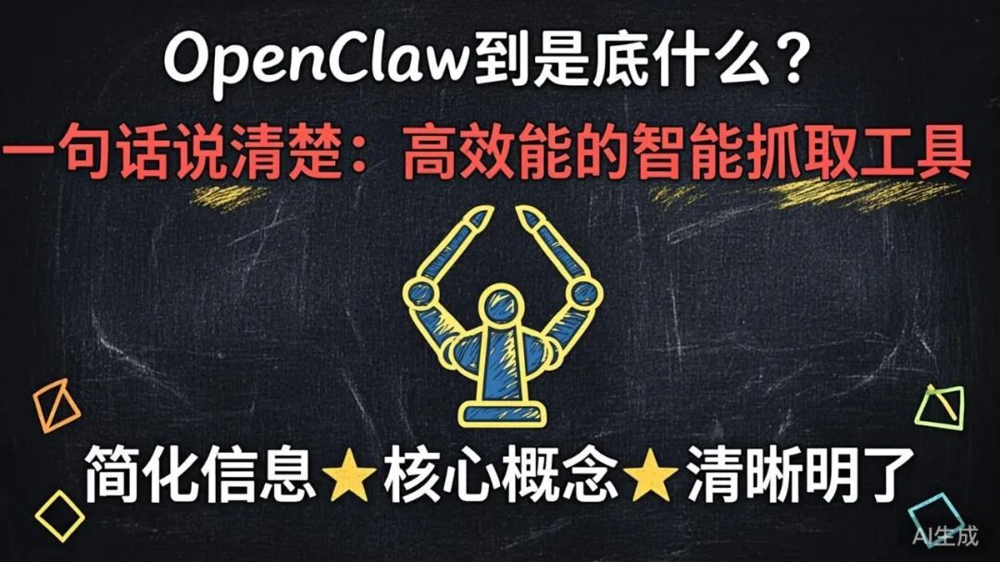
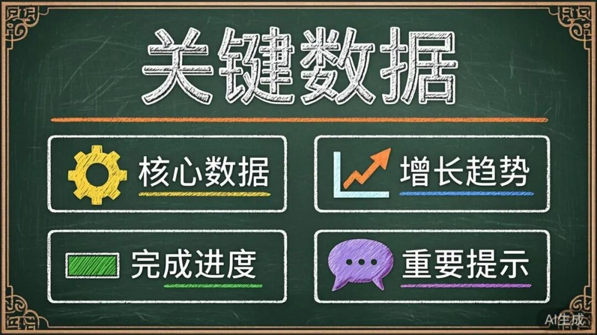
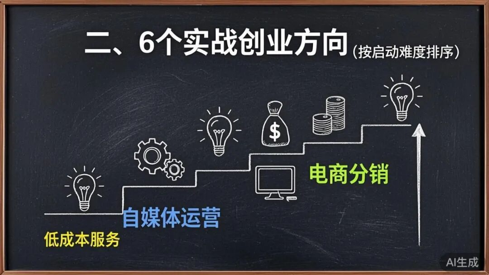

用OpenClaw创业的6个实战方向：从想法到第一桶金
先说结论：OpenClaw不是又一个AI玩具，它是一个完整的创业基础设施。本文基于3个月的生态调研，提炼出6个已验证的创业方向，最小的MVP只需2周，最大的想象空间对标WordPress生态。
一、OpenClaw到底是什么？一句话说清楚

别被"开源AI助手平台"这个标签迷惑了。
本质上，OpenClaw = 可自托管的ChatGPT + 自动化工具 + 多Agent协作系统。
它解决的核心痛点：企业想用AI助手，但不想把数据交给OpenAI，也不想被某个平台锁定。
关键数据

支持25+消息平台（微信、飞书、钉钉、Telegram、WhatsApp...） GitHub Stars增长迅速，社区活跃 技能市场ClawHub已有数十个官方+社区技能 企业级需求爆发，但供给严重不足
二、6个实战创业方向（按启动难度排序）

方向1：企业级托管服务（最快变现）
一句话模式：帮企业部署和维护OpenClaw，收服务费。
痛点验证：
企业想用AI助手，但没有技术团队 担心数据安全，需要私有化部署 需要合规认证（等保/SOC2/GDPR）
企业版：+ 单点登录（SSO）+ 审计日志 + SLA保障 → $99/用户/月
私有化部署：+ 定制开发 + 专属技术支持 → $10万+/项目
真实案例：Kev's Dream Team项目展示了14+ Agent的多层级编排，可直接包装成企业解决方案。
启动路径：
自己先深度部署体验（1周） 找3-5家中小企业做种子客户（2周） 跑通交付流程后规模化（持续）
方向2：垂直行业Agent平台（高天花板）
一句话模式：基于OpenClaw构建特定行业的多Agent解决方案。
高潜力赛道：
法律Agent示例（已验证需求）：
合同审查Agent：上传合同 → 风险点标注 + 修改建议 案例检索Agent：自然语言查询 → 相关判例 + 法律依据 合规检查Agent：定期扫描法规变化 → 预警推送
市场规模：全球法律科技市场$200亿+，年增长率30%+。中国市场数字化率极低，空间巨大。
启动路径：
选择1个细分场景（如合同审查） 开发3个核心Agent（6-8周） 招募10个种子用户验证付费意愿 打磨产品，建立口碑
方向3：技能市场运营（平台思维）
一句话模式：做OpenClaw生态的"App Store"，靠抽成赚钱。
现状痛点：
ClawHub刚起步，技能数量有限 缺乏质量审核和推荐机制 开发者变现渠道不清晰
开发者工具包 → CLI脚手架、调试工具、模拟环境 → $19/月订阅
企业定制开发 → 帮企业开发专属技能 → 项目制收费
对标案例：WordPress插件生态市场规模$100亿+。OpenClaw的技能生态还在早期，现在入局是最佳时机。
启动路径：
自己先开发3-5个实用技能，验证流程 建立技能质量标准和审核机制 吸引开发者入驻，积累100+技能 推出付费技能分成模式
方向4：多Agent编排平台（技术壁垒）
一句话模式：做企业级多Agent工作流编排工具，类似"AI版的n8n"。
典型场景：
内容生产流水线：
选题Agent → 研究Agent → 写作Agent → 编辑Agent → 发布Agent 软件开发流水线：
需求分析Agent → 架构设计Agent → 编码Agent → 测试Agent → 部署Agent 客户服务流水线：
意图识别Agent → 知识检索Agent → 回复生成Agent → 升级判断Agent 平台功能：
可视化工作流编辑器 Agent注册与发现 任务调度与负载均衡 人机协作界面（Human-in-the-loop）
云服务：按工作流执行次数计费 企业版：$500-2000/月 培训与咨询：$5000-20000/项目
方向5：垂直领域数据服务（长期价值）
一句话模式：构建行业专属知识库和RAG解决方案。
核心组件：
- 数据采集
：自动化抓取、清洗、结构化 - 向量数据库
：嵌入存储、语义检索 - RAG管道
：检索增强生成，结合OpenClaw Agent - 知识管理
：版本控制、协作编辑、权限管理
法律：判例库、法规库、合同模板库 医疗：临床指南、药品数据库、医学文献 金融：财报数据库、研报库、监管文件
数据订阅：$100-1000/月 RAG即服务：按查询次数计费 私有化部署：$5万-50万/项目
方向6：AI辅助开发与DevOps工具（开发者市场）
一句话模式：基于OpenClaw的AI驱动开发工具和DevOps自动化。
工具链：
- 代码审查
：自动化PR Review、代码质量检查 - 文档生成
：自动从代码生成API文档、CHANGELOG - 测试生成
：自动化单元测试、集成测试用例生成 - 部署自动化
：CI/CD流程优化、智能回滚 - 故障排查
：日志分析、错误诊断、修复建议
GitHub Copilot: 100万+用户，数亿美元收入 Cursor: 快速增长，AI IDE代表
三、如何选择适合自己的方向？
决策矩阵
我的建议
如果你有企业资源 → 从方向1（企业托管服务）切入，最快见到现金流
如果你有行业背景 → 从方向2（垂直Agent平台）切入，壁垒最高
如果你有技术背景 → 从方向4（多Agent编排）或方向6（AI DevOps）切入，天花板最高
如果你想做平台 → 从方向3（技能市场）切入，但需要长期投入
四、90天启动计划
第一个月：深度体验
[ ] 部署个人OpenClaw Gateway [ ] 安装5-10个技能体验 [ ] 加入Discord社区，观察真实用户需求 [ ] 深度体验n8n、Dify、Coze，找到差异化定位
第二个月：MVP开发
[ ] 选择1个垂直场景或方向 [ ] 开发第一个可用的Agent或技能 [ ] 招募3-5个种子用户 [ ] 测试付费意愿
第三个月：产品化
[ ] 根据反馈迭代产品 [ ] 建立标准化的交付流程 [ ] 撰写技术博客，建立影响力 [ ] 目标：月收入$1000+或10个付费客户
五、风险与应对
六、写在最后
OpenClaw生态还处于早期，这意味着什么？
意味着机会多，竞争少。
ChatGPT刚出来时，谁能想到提示词工程会成为一个职业？Midjourney刚出来时，谁能想到AI绘画能养活这么多设计师？
OpenClaw的机会在于：它是基础设施，上面可以长出无数应用。
不要做一个旁观者。选一个方向，用90天验证它。最坏的结果是学到了新技能，最好的结果是抓住了下一个风口。
参考资源：
OpenClaw GitHub: https://github.com/openclaw/openclaw 官方文档: https://docs.openclaw.ai ClawHub技能市场: https://clawhub.com Discord社区: https://discord.gg/clawd